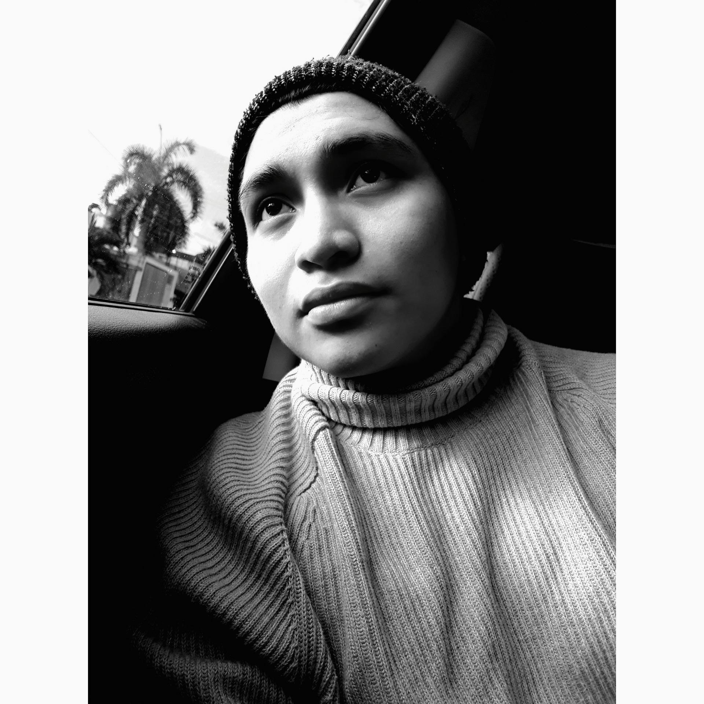

EDREY HERNANDEZ DZIB
160300135@gmail.com - 160300135
Jugar futbol, tocar instrumentos(Guitarra, piano, bateria, bajo,Ukulele)
Ingenieria en Datos e Inteligencia organizacional es una carrera tediosa, pero muy interesante, y con una gran variedad de campo laboral.
Me han gustado mucho las materias de programacion, aunque se me dificultan un poco, son muy interesantes; son un reto, por que cuando entre no sabia nada de programacion y poco a poco vas aprendiendo todo.
En la preparatoria, estuve en bachilleres 2, es un plantel que tiene buenas instalaciones y un gran personal educativo
Estudie musica por 9 meses, era muy divertido ensayar para los conciertos, hasta que ya no pude seguir por la escuela
Cuando termine de estudiar la prepa, mi primera opcion fue la Universidad de caribe, estoy Estudiando Ingenieria en datos.
Maroon 5, Es mi grupo favorito desde que estaba en la secundaria, y me se muchas de sus canciones en la guitarra.
Soy gemelo, tengo un hermano llamado "Jezreel", dicen que nos parecemos mucho, pero en realidad l parecido no es tanto.
Las materias de programacion, son mis materias favoritas, aunque a veces se me compliquen algunas cosas pero, son mis favoritas.